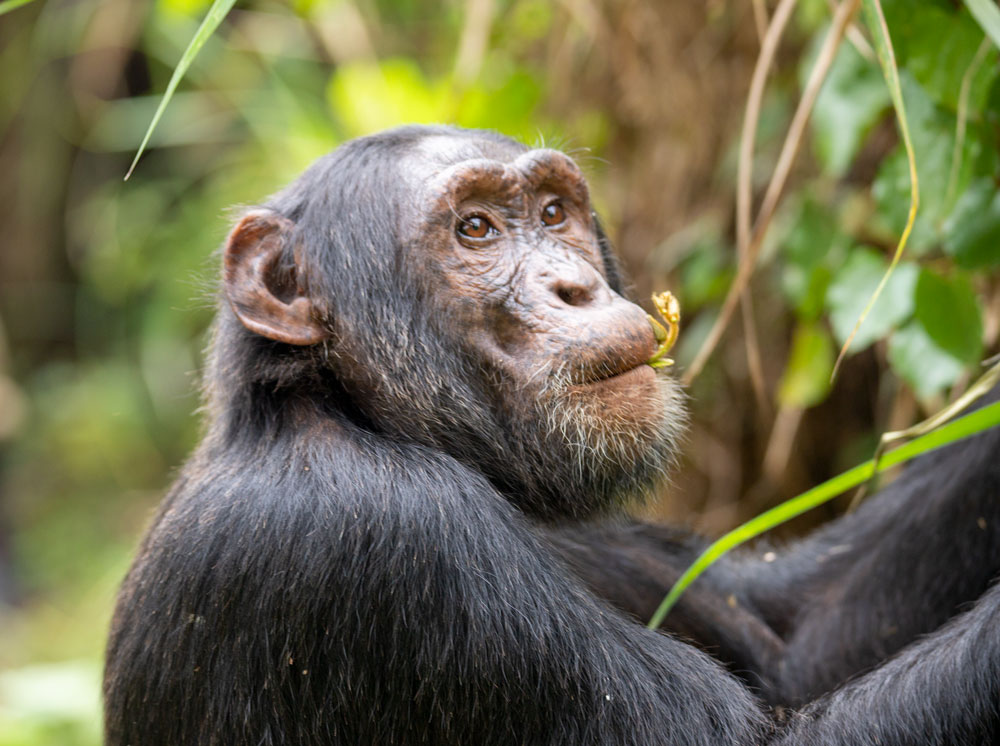

4-Day Murchison Falls Safari
Overview
Experience the beauty and wildlife of Uganda on this 4-day safari to Murchison Falls National Park, Budongo
Forest, and Ziwa Rhino Sanctuary. This journey combines adventure, wildlife encounters, and relaxation in
some of Uganda’s most iconic destinations.

Day 1
Kampala to Murchison Falls
After breakfast in Kampala, you will depart for Murchison Falls National Park, driving northwest through
scenic countryside. You’ll stop for lunch at New Court View Hotel in Masindi before proceeding to the park.
Upon arrival, enjoy a hike to the Top of Murchison Falls, where the Nile River crashes through a narrow gorge,
creating a breathtaking spectacle. After the hike, continue to Pakuba Safari Lodge for check-in and an evening
of relaxation. Meals and overnight at Pakuba Safari Lodge.

Day 2
Game Drive and Boat Cruise
Start your day with an early morning game drive on the northern bank of the Nile. Look out for elephants,
lions, giraffes, buffaloes, and a variety of antelope species. After breakfast, relax at the lodge until
lunchtime. In the afternoon, set out on a boat cruise to the base of the falls, where you’ll see hippos,
crocodiles, and numerous bird species along the riverbanks. Spend the evening relaxing and enjoying the
tranquility of the park. Overnight at Pakuba Safari Lodge.

Day 3
Chimpanzee Tracking and Transfer to Ziwa Rhino Sanctuary
After breakfast, check out and head to Budongo Forest Reserve for an exciting chimpanzee tracking experience.
Explore the forest and enjoy the sights and sounds of nature as you encounter these intelligent primates in
their natural habitat. You will then have lunch at New Court View Hotel in Masindi before continuing your
journey to Ziwa Rhino Sanctuary. Check in at Amuka Safari Lodge for relaxation and an overnight stay
surrounded by the sanctuary’s serene environment.

Day 4
Rhino Tracking and Return to Kampala
After breakfast, go for rhino tracking on foot at Ziwa Rhino Sanctuary, where you will have a close encounter
with Uganda’s only wild rhinos. After this memorable experience, have lunch at the lodge and then begin your
journey back to Kampala, arriving in the evening.
End of Safari.
Things to Pack When Coming for Safari
- Waterproof Hiking Shoes
- Long cotton socks
- Face masks
- Gardening gloves
- Long-sleeved Shirts & Sunscreen
- A Hat & a Rain jacket
- Light backpack & Insect repellents
- A Camera & a Pair of Binoculars
- Drinking water bottle and Energy-giving snacks
Inclusions
- A professional driver/guide
- All transportation (unless labeled as optional)
- All Taxes/VAT
- Meals (as specified in the day-by-day section)
- Accommodation as outlined
Exclusions
- International flights (from/to home)
- Additional accommodation before and at the end of the tour
- Tips (Tipping guideline US$10.00 pp per day)
- Personal items (Souvenirs, travel insurance, visa fees, etc.)
- Government-imposed increase of taxes and/or park fees